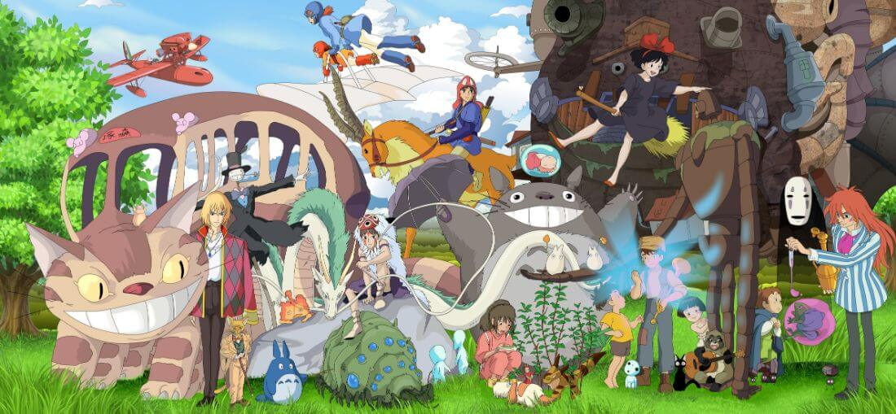

Hayao Miyazaki Profile
Legendary Animator
Hayao Miyazaki is a world-renowned Japanese animator, director, producer, screenwriter, and manga artist. He is the co-founder of Studio Ghibli and has created some of the most beloved animated films.
Hayao Miyazaki making ramen
Achievements
- • Spirited Away (Oscar Winner)
- • Totoro (Cultural Icon)
- • Lifetime Achievement Award
Awards
- • Academy Award
- • Golden Bear
- • Honorary Oscar
